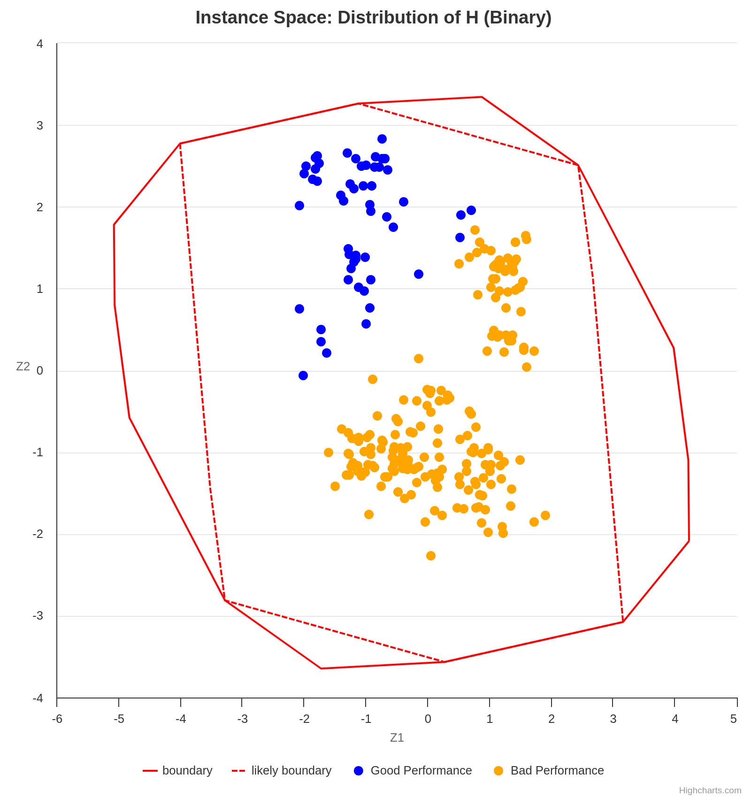

Quick Reference
By LOG-UFPB.
Welcome to Quick Reference, a collection of useful knowledge that can be accessed quickly.
The effort of one person to understand how to solve a problem should be recorded so that others in the same situation only need to consult the QR instead of going through the same struggle. Besides, random knowledge such as links (to videos or websites), libraries, tips, and tricks can be useful to many people but are not always intuitive to find or use. Therefore, documenting them is important.
Here, you will find quick references related to the topics below and more:
- Programming
- Optimization
- Mathematics
- Data science
The QR is Markdown-based book created with mdBook, just like The Rust Programming Language and Helix Documentation.
Vector
They store a group of elements, sequentially.
- Part of the C++ STL
- Implementation: Arrays that can be reallocated in case they exceed a specific size.
- Time complexity for the main operations:
- Insertion of elements at the end of the vector: \(O(1)\)
- Insertion of elements in the middle of the vector: \(O(n)\)
- Removal of elements at the end of the vector: \(O(1)\)
- Removal of elements in the middle of the vector: \(O(n)\)
- Search for an element in a certain position: \(O(1)\)
- Search for an element with a certain value: \(O(n)\)
Priority queues
They store a group of elements sequentially, and efficiently obtain its maximum or minimum value.
- Part of the C++ STL
- Implementation: Max/Min Heap
- Time complexity for the main operations:
- Insertion of any element: \(O(\log n)\)
- Removal of any element: \(O(\log n)\)
- Search for the maximum/minimum value: \(O(1)\)
Set
They efficiently store a group of non-repeating elements.
- Part of the C++ STL
- Implementation: Binary Search Trees
- Time complexity for the main operations:
- Insertion of any element: \(O(\log n)\)
- Removal of any element: \(O(\log n)\)
- Search for an element with a certain value: \(O(\log n)\)
Map
They store elements of type <key, value> efficiently avoiding key repetition (repetition of values is possible).
- Part of the C++ STL
- Implementation: Binary Search Trees
- Time complexity for the main operations:
- Insertion of any element: \(O(\log n)\)
- Removal of any element: \(O(\log n)\)
- Search for an element with a certain key: \(O(\log n)\)
Disjoint Set Union
This data structure stores a collection of sets without element overlap. It allows for efficient operations to create and join sets, as well as checking if two elements are part of the same set. Disjoint Set Union is used in efficient implementations of the Kruskal algorithm for finding the Minimum Spanning Tree of a graph.
- Not a part of the C++ STL
- Implementation: Vectors or Arrays
- Time complexity for the main operations:
- Create a set: \(O(1)\)
- Join two sets: \(\approx O(1)\)
- Search for a set of a certain element: \(\approx O(1)\)
- Check if two elements are part of the same set: \(\approx O(1)\)
Example:

#include <iostream>
#include <vector>
using namespace std;
class Disjointed_set_union{
private:
struct Element{
int root;
int rank;
Element() = default;
Element(int root) : root(root), rank(1){}
};
vector<Element> map;
public:
Disjointed_set_union(int total_elements){
map.resize(total_elements);
}
void make_set(int value){
int last_idx = map.size();
map[value] = Element(value);
}
int find(int value){
if(map[value].root == value){
return value;
}
return map[value].root = find(map[value].root);
}
void union_sets(int value_1, int value_2){
int root_1 = find(value_1);
int root_2 = find(value_2);
if (root_1 != root_2){
int rank_1 = map[root_1].rank;
int rank_2 = map[root_2].rank;
if(rank_1 > rank_2){
map[root_2].root = root_1;
}else if(rank_1 < rank_2){
map[root_1].root = root_2;
}else{
map[root_2].root = root_1;
map[root_1].rank++;
}
}
}
bool is_same_set(int value_1, int value_2){
return find(value_1) == find(value_2);
}
};
int main(){
// The elements are numbered from 1 to 4 to match the figure above
int max_elements = 5;
Disjointed_set_union dsu(max_elements); // Max of elements is 4
dsu.make_set(1);
dsu.make_set(2);
dsu.make_set(3);
dsu.make_set(4);
for(int i = 1; i < max_elements; ++i){
for(int j = i+1; j < max_elements; ++j){
if (dsu.is_same_set(i, j)){
printf("%d and %d are in the same set\n", i, j);
}else{
printf("%d and %d are not in the same set\n", i, j);
}
}
}
printf("\n ------------- \n\n");
dsu.union_sets(1, 2);
for(int i = 1; i < max_elements; ++i){
for(int j = i+1; j < max_elements; ++j){
if (dsu.is_same_set(i, j)){
printf("%d and %d are in the same set\n", i, j);
}else{
printf("%d and %d are not in the same set\n", i, j);
}
}
}
printf("\n ------------- \n\n");
dsu.union_sets(3, 4);
for(int i = 1; i < max_elements; ++i){
for(int j = i+1; j < max_elements; ++j){
if (dsu.is_same_set(i, j)){
printf("%d and %d are in the same set\n", i, j);
}else{
printf("%d and %d are not in the same set\n", i, j);
}
}
}
printf("\n ------------- \n\n");
dsu.union_sets(1, 3);
for(int i = 1; i < max_elements; ++i){
for(int j = i+1; j < max_elements; ++j){
if (dsu.is_same_set(i, j)){
printf("%d and %d are in the same set\n", i, j);
}else{
printf("%d and %d are not in the same set\n", i, j);
}
}
}
return 0;
}
It is possible to use unordered_map instead of vector for a more general implementation.
Graphs (adjacency list)
They represent sparse graphs when it is necessary to know which arcs touch a certain vertex. This data structure is efficient in memory spaces when compared to other implementations (e.g., adjacency matrix). Moreover, they can be more efficient, time-wise, for algorithms such as breadth-first search and depth-first search.
- Not a part of the C++ STL
- Implementation: Vector of vectors
- Time complexity for the main operations:
- Insertion of elements at the end of the vector: \(O(1)\)
- Removal of elements at the end of the vector: \(O(1)\)
- Check the existence of an arc between any two vertices: \(O(n)\)
Example:

#include<cstdio>
#include<vector>
using namespace std;
int main(){
int total_nodes = 4;
vector<vector<int>> graph(total_nodes); // initialise with 4 empty vectors
graph[0].push_back(1); // adds an arc from 0 to 1
graph[1].push_back(2); // adds an arc from 1 to 2
graph[1].push_back(4); // adds an arc from 1 to 4
graph[2].push_back(3); // adds an arc from 2 to 3
graph[3].push_back(0); // adds an arc from 3 to 0
graph[3].push_back(1); // adds an arc from 3 to 1
graph[4].push_back(3); // adds an arc from 4 to 3
// iterate over the arcs from each vertex
for(int i = 0; i < total_nodes; ++i){
for(auto j : graph[i]){
printf("There is an arc from %d to %d\n", i, j);
}
}
return 0;
}
Graphs (adjacency matrix)
They represent dense graphs when it is necessary to know if there is an arc between any two vertices or its cost in weighted graphs.
- Not a part of the C++ STL
- Implementation: Array of arrays or vector of vectors. It is important it is a matrix \(n \times n\).
- Time complexity for the main operations:
- Insertion of an arc: \(O(1)\)
- Removal of an arc: \(O(1)\)
- Changing an arc: \(O(1)\)
- Check the existence of an arc between any two vertices: \(O(1)\)
- Obtain the cost of an arc between any two vertices: \(O(1)\)
- Insertion of a vertex costs the same as a matrix reallocation for an array of arrays or the vertex insertion in each vector when implementing this structure as a vector of vectors.
Example:
#include<cstdio>
#include<vector>
using namespace std;
int main(){
int total_nodes = 5;
int graph_arr[total_nodes][total_nodes] = {
{0, 3, 0, 7, 8},
{3, 0, 1, 4, 0},
{0, 1, 0, 2, 0},
{7, 4, 2, 0, 3},
{8, 0, 0, 3, 0}
};
// iterate over the vertices
for(int i = 0; i < total_nodes; ++i){
for(int j = i+1; j < total_nodes; ++j){
if(graph_arr[i][j])
printf("There is an edge from %d to %d with cost: %d\n", i, j, graph_arr[i][j]);
}
}
printf("\n-----------------------\n\n");
vector<vector<int>> graph_vec {
{0, 3, 0, 7, 8},
{3, 0, 1, 4, 0},
{0, 1, 0, 2, 0},
{7, 4, 2, 0, 3},
{8, 0, 0, 3, 0}
};
// iterate over the vertices
for(int i = 0; i < total_nodes; ++i){
for(int j = i+1; j < total_nodes; ++j){
if(graph_vec[i][j])
printf("There is an edge from %d to %d with cost: %d\n", i, j, graph_vec[i][j]);
}
}
return 0;
}
-
nlohmann/json: A Popular, header-only C++ library for working with JSON. It provides an intuitive, STL-like API for parsing, serializing, and manipulating JSON data.
-
p-ranav/argparse: A lightweight, header-only C++ library for command-line argument parsing with a Python argparse-like API.
-
google/benchmark: A microbenchmarking library for measuring the performance of C++ code, designed for benchmarking functions and code snippets.
-
google/googletest: A widely used C++ testing framework that provides unit testing capabilities with assertions, fixtures, and test runners.
-
catchorg/Catch2: A modern, header-only C++ testing framework that supports simple test case definitions and expressive assertions.
-
fmtlib/fmt: A fast and safe formatting library for C++, providing an alternative to
printfandstd::ostream. -
gabime/spdlog: A fast, header-only C++ logging library with support for console and file output, formatting, and multithreading.
Documentation
-
https://cplusplus.com/
-
https://en.cppreference.com/w/
Github repositories
-
https://github.com/federico-busato/Modern-CPP-Programming
-
https://github.com/cpp-best-practices/cppbestpractices
Books
- The Art of Writing Efficient Programs: An advanced programmer's guide to efficient hardware utilization and compiler optimizations using C++ examples (Fedor G. Pikus, 2021)
- C++ High Performance, Second Edition: Master the art of optimizing the functioning of your C++ code (Björn Andrist, Viktor Sehr, 2020)
- C++ Concurrency in Action: Practical Multithreading 1st Edition (Anthony Williams, 2012)
Youtube channels
-
https://www.youtube.com/@TheCherno
-
https://www.youtube.com/@cppweekly
-
https://www.youtube.com/@CppNow
Installation
To be able to use Git on your computer, install the Git command-line interface (CLI).
Basic Commands
Some basic commands, as well as commit commands, can be very useful in everyday use of Git CLI.
Best Practices
Follow some recommended best practices for version control in order to properly use Git, especially when working as part of a team.
Authentication
On some platforms like GitLab, one can easily sign in to their account through Git CLI by using a username and password. However, GitHub does not allow you to do that. Instead, you have to set up a personal access token that will be used to identify you when doing operations like pushing content to a remote repository.
Concorde Solver
The Concorde solver is a state-of-the-art algorithm for efficiently solving the symmetric Travelling Salesman Problem (TSP).
Python Wrapper
A convenient way to use this solver is through the PyConcorde library, a Python wrapper that interfaces with Concorde.
Installation
Installation instructions are well-described in the PyConcorde Documentation.
Loading a TSP problem
To load a TSP problem into the solver, provide a TSP instance file. In this example, an existing instance, a280.tsp, is passed to the solver.
from concorde.tsp import TSPSolver
INSTANCE_PATH = "./a280.tsp"
solver = TSPSolver.from_tspfile(INSTANCE_PATH)
If you only have the distance matrix, create a TSP instance file using the TSPLIB 95 library.
import tsplib95
distance_matrix = [
[0, 4, 6, 9, 7],
[4, 0, 3, 2, 2],
[6, 3, 0, 1, 8],
[9, 2, 1, 0, 4],
[7, 2, 8, 4, 0]
]
SIZE = len(distance_matrix)
problem = tsplib95.models.StandardProblem()
problem.name = "example"
problem.type = "TSP"
problem.dimension = SIZE
problem.edge_weight_type = "EXPLICIT"
problem.edge_weight_format = "FULL_MATRIX"
problem.edge_weights = distance_matrix
problem.save("example.tsp")
To generate instances with alternative edge weight types such as EUC_2D or GEO, you can create TSP files by referring to the following examples.
Solving
To execute the algorithm, call the .solve() method:
solution = solver.solve()
By default, the solver prints detailed information during execution. To disable verbosity, use the verbose parameter:
solution = solver.solve(verbose=False)
After execution, the solver returns an object containing, among others, the runtime and the computed tour, as well as flags indicating if the solve was successful and if the time bound was reached.
def print_solution(solution):
print(f"Success: {solution.success}")
print(f"Hit timebound: {solution.hit_timebound}")
print(f"Optimal value: {solution.optimal_value} ")
print(f"Tour: {solution.tour}")
Please, follow the instructions on the quick start guide for a shared installation. Then, add the following lines to the /etc/profile file.
export GUROBI_HOME="/opt/gurobi1003/linux64"
export PATH="${PATH}:${GUROBI_HOME}/bin"
export LD_LIBRARY_PATH="${LD_LIBRARY_PATH}:${GUROBI_HOME}/lib"
Retrieving a license
To retrieve a Gurobi named-user academic license, please refer to the quick start guide. This type of license is designed for a single person, on a single machine.
You must be connected to an academic domain to request a new named-user academic license, otherwise, an Academic Domain Error will be issued. In the case of UFPB, a workaround to this issue can be found on how to access academic portals from outside UFPB's network domain.
Setting up a license
Assuming the license has been downloaded to the home directory, i.e., home/<user>.
1. Rename the license file.
$ mv gurobi.lic $HOSTNAME
2. Add the following line to the .bashrc file.
export GRB_LICENSE_FILE="/home/<user>/$HOSTNAME"
These steps are especially important for users with a home folder shared among multiple machines. For example, assume the user log has a home directory shared between machines q1 and q2, and each machine has a Gurobi installation (see shared installation). In such case, downloading and exporting the GRB_LICENSE_FILE as in the aforementioned steps, for both machines, lets Gurobi select the corresponding license file according to the machine you are logged in.
Do not forget to source the modified .bashrc file, or reboot the machine, for changes to take effect.
$ source .bashrc
Instance space analysis
According to Smith-Miles and Muñoz (2023),
"Instance Space Analysis (ISA) is a recently developed methodology to (a) support objective testing of algorithms and (b) assess the diversity of test instances. Representing test instances as feature vectors, the ISA methodology extends Rice’s 1976 Algorithm Selection Problem framework to enable visualization of the entire space of possible test instances, and gain insights into how algorithm performance is affected by instance properties. Rather than reporting algorithm performance on average across a chosen set of test problems, as is standard practice, the ISA methodology offers a more nuanced understanding of the unique strengths and weaknesses of algorithms across different regions of the instance space that may otherwise be hidden on average. It also facilitates objective assessment of any bias in the chosen test instances and provides guidance about the adequacy of benchmark test suites."
An ISA is capable of generating a plot of instances based on the projection of various features into a 2D space. It may be necessary to analyze multiple graphs simultaneously in order to obtain meaningful conclusions when interpreting an ISA. For example, the following plot suggests that the analyzed algorithm performs worse for the instances projected in the lower right half of the 2D space, as the gap is higher in that section.
Concurrently, the following plot shows the value of the feature max-utilization in each instance. By comparing both graphs, we can infer a positive correlation tendency between the feature max-utilization and the instance difficulty. In other words, the higher the max-utilization, the harder the instance tends to be for the analyzed algorithm to solve.
Finally, some algorithms perform better in certain instance sets, and an ISA is also capable of providing this valuable insight. As already observed, the algorithm H performs well in instances with a low max-utilization. However, with the increase of max-utilization, F1_i becomes the best choice.
Making a legible projection of the instances into the 2D space is a challenging task since each instance is represented by a vector of features whose length is usually greater than 2. Fortunately, the Melbourne Algorithm Test Instance Library with Data Analytics (Matilda) takes care of everything.
Using Matilda
Matilda is an intuitive tool. Using the online version is recommended over downloading the code locally, as the former is much simpler.
For the input data, follow the instructions on their GitHub repository.
There is a complete tutorial available here. Start watching at time 33:32 if you want to use the online version.
References
Kate Smith-Miles and Mario Andrés Muñoz. 2023. Instance Space Analysis for Algorithm Testing: Methodology and Software Tools. ACM Comput. Surv. 55, 12, Article 255 (December 2023), 31 pages. https://doi.org/10.1145/3572895
Datasets
Here a some basics related datasets
How to Deal with Out-of-Range Data
Out-of-range data refers to values that fall outside the expected or acceptable range for a given feature. These values can occur due to data entry errors, system glitches, or real but rare events. Handling such values appropriately is critical for ensuring robust and accurate models or analyses.
1. Dropping Data
Removing rows that contain out-of-range values.
Pros:
- Simple and effective if few data points are affected.
- Ensures only valid data is used in analysis.
Cons:
- May lead to information loss, especially if the affected proportion is high.
- Can introduce bias if the removed data is not missing at random.
Rule of Thumb: Only drop rows when a small proportion (e.g., < 5%) of your dataset contains out-of-range values.
Example:
df = df[df['age'] <= 100] # Remove entries with age > 100
2. Setting Custom Minimums and Maximums (Capping or Clipping)
Cap values at predefined minimum and maximum thresholds.
Pros:
- Preserves all data points while limiting the influence of outliers.
- Useful for models sensitive to extreme values (e.g., linear regression).
Cons:
- Can distort the data distribution.
- Requires domain knowledge to set appropriate thresholds.
Example:
df['income'] = df['income'].clip(lower=0, upper=200_000)
3. Treat as Missing and Impute
Convert out-of-range values to NaN and handle them using imputation techniques.
Pros:
- Flexible and model-friendly.
- Allows for advanced imputation strategies (e.g., KNN, regression).
Cons:
- Introduces complexity.
- Risk of incorrect imputation if assumptions are wrong.
Example:
df.loc[df['temperature'] < -50, 'temperature'] = np.nan
df['temperature'].fillna(df['temperature'].mean(), inplace=True)
4. Setting Custom Values Based on Business Rules
Replace out-of-range values with specific values that reflect domain-specific assumptions.
Pros:
- Makes data consistent with business logic.
- Can enhance interpretability of results.
Cons:
- Requires clear and justifiable domain rules.
- May oversimplify real-world complexity.
Example:
# Set to 0 if below minimum viable production
df.loc[df['production'] < 0, 'production'] = 0
5. Binning or Categorization
Convert continuous out-of-range values into categorical bins.
Pros:
- Useful for decision trees or models that handle categories well.
- Can handle extreme values gracefully.
Cons:
- Loss of numeric precision.
- Choice of bins affects model performance.
Example:
df['age_group'] = pd.cut(df['age'], bins=[0, 18, 65, 100], labels=['child', 'adult', 'senior'])
6. Log or Other Transformations
Apply transformations to reduce the effect of extreme values rather than removing or capping them.
Pros:
- Useful for skewed distributions.
- Retains the structure of the data.
Cons:
- May not be interpretable in business terms.
- Zero or negative values can cause issues.
Example:
df['log_income'] = np.log1p(df['income']) # log(1 + income)
Final Thoughts
Choosing the right strategy depends on:
- The proportion of out-of-range values.
- Domain knowledge and business constraints.
- The sensitivity of downstream models or analyses to extreme values.
When in doubt, visualize your data, consult domain experts, and test different approaches to ensure robustness.
Duplicate Data
Duplicate data refers to rows that are repeated partially or fully in a dataset. These duplicates can lead to biased analyses, incorrect statistics, and misleading results.
What Is It?
Duplicates are records in your dataset that are identical (complete duplicates) or share key identifying information (incomplete duplicates).
- Complete duplicate: Every column in a row matches exactly with another row.
- Incomplete duplicate: Only some columns match (e.g., name and address), while others may differ (e.g., height, timestamp).
Why Do They Happen?
Common causes of duplicate data:
- Human error: Manual data entry mistakes or form re-submissions.
- Merges/joins: Joining datasets without specifying appropriate keys can create repeated rows.
- Bugs in data pipelines: Errors in scripts, APIs, or scraping logic.
- Design flaws: Systems that don't enforce unique constraints or primary keys.
How to Find Duplicate Values?
1. Complete Duplicates
Find rows that are exact copies:
duplicates = df.duplicated()
print(df[duplicates])
This flags rows that match all column values of a previous row. To include the first occurrence:
df[df.duplicated(keep=False)]
Example Output:
| first_name | last_name | address | height | weight |
|---|---|---|---|---|
| Alice | Smith | 123 Main St | 165 | 60 |
| Alice | Smith | 123 Main St | 165 | 60 |
2. Incomplete Duplicates
Find duplicates based on subset of columns:
column_names = ["first_name", "last_name", "address"]
duplicates = df.duplicated(subset=column_names, keep=False)
print(df[duplicates])
Example Output:
| first_name | last_name | address | height | weight |
|---|---|---|---|---|
| John | Doe | 456 Elm Ave | 180 | 80 |
| John | Doe | 456 Elm Ave | 179 | 82 |
How to Treat Duplicate Values?
1. Removing Complete Duplicates
df.drop_duplicates(inplace=True)
This keeps only the first occurrence of each duplicate row.
You can customize:
keep='last': keeps the last occurrence.keep=False: drops all duplicates.
2. Resolving Incomplete Duplicates with Aggregation
If some attributes differ, you may want to merge them using summary statistics:
column_names = ["first_name", "last_name", "address"]
summaries = {"height": "max", "weight": "mean"}
df_cleaned = df.groupby(by=column_names).agg(summaries).reset_index()
Example Transformation:
Original:
| first_name | last_name | address | height | weight |
|---|---|---|---|---|
| John | Doe | 456 Elm Ave | 180 | 80 |
| John | Doe | 456 Elm Ave | 179 | 82 |
After aggregation:
| first_name | last_name | address | height | weight |
|---|---|---|---|---|
| John | Doe | 456 Elm Ave | 180 | 81.0 |
Best Practices
- Always inspect duplicates before removing them.
- Understand why duplicates occur — fixing the root cause is better than patching.
- Consider if duplicates contain additional information worth preserving (e.g., timestamps, different measurements).
Bonus: Count of Duplicates
To check how often each duplicate appears:
df[column_names].value_counts()
Significance tests
When to use it
A significance test relies on two hypotheses: the null hypothesis (H0) and the alternative hypothesis (Ha). It can be applied, for instance, to formally confirm if the average gaps found by two algorithms are statistically different. In such a case, H0 states that there are no differences between the average gaps, and Ha states the logical opposite, i.e., that there are differences between the average gaps.
A few tips
Building the distribution of the differences
Suppose the samples, namely the average gaps found by algorithms A and B, are a = [250, 500, ..., 300], and b = [251, 480, ..., 350], respectively. Then, the distribution of the differences is a - b = [-1, 20, ..., -50].
Normality test
Depending on the type of test one wishes to perform, a normality test might be required. That is the case for parametric tests like the t-test. For nonparametric tests, such as the Wilcoxon signed-rank test, no assumptions are made on the samples, and the normality test is not necessary. The following diagram shows the type of test one must use based on a few characteristics of the data.

Although not strictly necessary, one can apply a normality test on a - b to confirm that it is not normally distributed and justify the choice of employing a nonparametric test.
Wilcoxon signed-rank test
The Wilcoxon signed-rank test can either reject the null hypothesis in favor of the alternative hypothesis, or fail to reject H0. The latter does not mean that the null hypothesis is accepted.
Example of an article with significance tests
Generating guitar solos by integer programming
Oxford math classes
Oxford Mathematics offers a collection of math classes on YouTube. You can explore the entire playlist here.
Calculus
Probability
Graph Theory
Set Theory
Linear Algebra
Differential Equations
Networks
The use of algorithms for problem solving is almost mandatory in the field of optimization. Algorithms describe the sequence of step one must take to solve a problem, and as such, the way they are presented in scientific writing can highly impact understanding. Fortunately, LaTeX provides routines for neatly presenting both pseudocode and actual code. For instance, many packages allow writing pseudocode through the algorithm environment. For snippets of code in real programming languages, one may resort to minted or verbatim and listings.
Pseudocode
Package algorithm2e is frequently used for pseudocode. It is straightforward to use for programmers, as it resembles real code. It is also highly customizable and flexible. In the example below, the flags vlined and linesnumbered were used to add vertical lines and line numbering. As with equations, the label command can be used to assign labels to each line, so they can be referenced later in the text. It is also possible to use the tcc and tcp commands to add comments to the pseudocode.
\usepackage{mathtools}
\usepackage[ruled, vlined, linesnumbered, english, onelanguage]{algorithm2e}
...
\begin{algorithm}[ht]
\DontPrintSemicolon
\KwData{An array of numbers $A$}
\KwResult{A sorted array $A'$}
\Begin{
$A' \gets A$ \tcp{Make a copy of A}
\For{$j = 1,\dots,n$}{ \label{line:bubblefor1}
\For{$i=0,\dots,n-1$}
{ \label{line:bubblefor2}
\If{$A'[i] > A'[i+1]$}{ \label{line:bubbleif}
\tcc{Swapping A'[i] and A'[i + 1] through temporary variable}
$\text{temp} \gets A'[i]$ \label{line:swap1} \;
$A'[i] \gets A'[i+1]$ \;
$A'[i+1] \gets \text{temp} $ \label{line:swap2} \;
}
}
}
\Return{$A'$}
}
\caption{\textsc{Bubble Sort}\label{alg:bubblesort}}
\end{algorithm}
Algorithm \ref{alg:bubblesort} describes an implementaiton of Bubble Sort.
Lines \eqref{line:bubblefor1} and \eqref{line:bubblefor2} iterate through all pairs of elements in $A'$.
Line \eqref{line:bubbleif} checks if $A'[i]$ is greater than $A'[i+1]$, in which case these elements are swapped in lines \eqref{line:swap1}--\eqref{line:swap2}.
In case multiple procedures or functions are used and defined in the same pseudocode, use the \SetFwFunction and \SetKwProg commands. The former creates a macro for a function that may be called multiple times through the code. The latter is used if one wishes to create a block of code for each procedure. Both commands were used in the following snippet.
\begin{algorithm}[ht]
\DontPrintSemicolon
\KwData{A graph $G$, weight function $w$ and source $s$}
\KwResult{Predecessors $v.\pi$ for each $v \in G.V$ }
\SetKwFunction{FDijkstra}{\textsc{Dijkstra}}
\SetKwFunction{FExtract}{\textsc{Extract-Min}}
\SetKwFunction{FRelax}{\textsc{Relax}}
\SetKwFunction{FInit}{\textsc{Initialize-Single-Source}}
\SetKwProg{Proc}{Procedure}{ is}{end}
\Proc{\FDijkstra{$G, w, s$}}{
\FInit{$G,s$} \;
$S \gets \emptyset $ \;
$Q \gets G.V $ \;
\While{$Q \neq \emptyset$}{
$u \gets \FExtract$ \;
$S \gets S \cup \{u\}$ \;
\For{each vertex $v \in G.Adj[u]$}{
\FRelax{$u,v,w$}
}
}
}
\Proc{\FRelax{$u,v,w$}}{
\If{$v.d > u.d + w(u,v)$}{
$v.d \gets u.d + w(u,v)$ \;
$v.\pi \gets u$
}
}
\caption{\textsc{Dijkstra}\label{alg:dijkstra}}
\end{algorithm}
Real code
When it comes to showing real code within the text, the listings package is highly recommended, as it works quite well with most programming languages. One may also specify settings such as font size, background colors and framing as they wish. These settings can then be grouped into a "style" so they can be reused throughout the text, as shown below with the cplusplusListStyle.
\usepackage{listings}
\usepackage[scaled=0.9]{DejaVuSansMono}
\lstdefinestyle{cplusplusListStyle}{
belowcaptionskip=1\baselineskip,
breaklines=true,
xleftmargin=\parindent,
language=C++,
frame=tb,
showstringspaces=false,
tabsize=2,
%basicstyle=\footnotesize,
basicstyle=\footnotesize\ttfamily,
keywordstyle=\bfseries\color{green!40!black},
commentstyle=\itshape\color{purple!40!black},
identifierstyle=\color{blue},
stringstyle=\color{orange},
numbers=left,
stepnumber=1
}
% ...
\begin{lstlisting}[style=cplusplusListStyle]
// Your First C++ Program
#include <iostream>
int main() {
std::cout << "Hello World!";
return 0;
}
\end{lstlisting}
For more minimalist (no syntax highlighting) and simple snippets of code, try the verbatim environment. For an alternative to listings, try minted, which works pretty similarly. Unlike listings, however, the minted package contains ready-made syntax highlighting for most famous programming languages.
Being able to write mathematical expressions with plain text is one of LateX's greatest features, and makes it well-suited for scientific writing. For instance, adding
$S = \sum_{i=1}^{m} \left( \sum_{j=1}^{n} \alpha^k x_k + \frac{\log{i}}{i} \right) $
to a plain LaTeX file yields the expression $$S = \sum_{i=1}^{m} \left( \sum_{j=1}^{n} \alpha^k x_k + \frac{\log{i}}{i} \right). $$ Frequently used mathematical objects (e.g., matrices, vectors, sets, piecewise functions) can be easily written likewise.
For an overall introduction to latex math, refer to Overleaf guides.
Mathematical formulations
Mathematical formulations are commonly used to solve optimization problems. As such, one is often faced with the task to cleanly present them in scientific reports. Many times, a mathematical formulation can be seen as a collection of equations, inequations and expressions that are deeply related. Therefore, care must be taken to correctly organize and align such expressions, so they are presented in an easy to follow fashion.
The following example shows how one may write a formulation for the Traveling Salesman Problem in LaTeX. A label can be assigned to each equation with the \label{} command. Labeled equations can be referenced later in the text by using the \eqref{} command. By default, equations are automatically numbered. Alternatively, the \tag{} command can be used to assign a custom name to an equation instead of a number. All references to an equation will work as a hyperlink if the package hyperref is imported.
\begin{align}
\min & \sum_{i \in V, j > i} c_{ij} x_{ij} \tag{TSP}\label{eq:probTSP} \\
\text{s.t. } & \sum_{j>i} x_{ij} + \sum_{j<i} x_{ji} = 2, i \in V, \label{eq:degreeConstraintsTSP} \\
& \sum_{i \in S}\sum_{j \notin S} x_{ij} \geq 1, S \subset V, S \neq \emptyset, \label{eq:subtourConstraintsTSP} \\
& x_{ij} \in \{0,1\}, i \in V, j > i. \label{eq:integralityConstraintsTSP}
\end{align}
Problem \eqref{eq:probTSP} aims to minimize the total traveling cost.
Constraints \eqref{eq:degreeConstraintsTSP} force all vertices to have degree 2.
Constraints \eqref{eq:subtourConstraintsTSP} ensure connectivity.
Finally, constraints \eqref{eq:integralityConstraintsTSP} describe the domain of variables $x_{ij}$
Much of how formulations are actually structured is subject to one's liking. In the previous example, the & operator was used to align equations to the left. The following snippet shows an alternative way to present the same formulation, in such a way that expressions are more evenly distributed, and the objective function is centered.
\begin{align}
\text{min} \sum_{i \in V, j > i} c_{ij} x_{ij} \tag{TSP}\label{eq:probTSP}
\end{align}
\begin{align}
\text{s.t. } \sum_{j>i} x_{ij} + \sum_{j<i} x_{ji} = 2 & & i \in V \label{eq:degreeConstraintsTSP} \\
\sum_{i \in S}\sum_{j \notin S} x_{ij} \geq 1 & & S \subset V, S \neq \emptyset \label{eq:subtourConstraintsTSP} \\
x_{ij} \in \{0,1\} & & i \in V, j > i \label{eq:integralityConstraintsTSP}
\end{align}
Problem \eqref{eq:probTSP} aims to minimize the total traveling cost.
Constraints \eqref{eq:degreeConstraintsTSP} force all vertices to have degree 2.
Constraints \eqref{eq:subtourConstraintsTSP} ensure connectivity.
Finally, constraints \eqref{eq:integralityConstraintsTSP} describe the domain of variables $x_{ij}$
Further yet, one may opt to use specialized packages. One such package is optidef, which allows us to write the formulation for optimization problems as in the example below. However, mastering default commands such as align{} and equation{} is highly recommended, as they give us much more control.
\usepackage{optidef}
...
\begin{maxi}
{}{\sum_{i=1}^{m}\sum_{j=1}^{n}p_{ij}x_{ij}}
{}{}
\addConstraint{\sum_{j=1}^n w_{ij} x_{ij}} {\leq t_i}{\quad i=1,\dots,n}
\addConstraint{\sum_{i=1}^m x_{ij}} {= 1}{\quad j=1,\dots,m}
\addConstraint{x_{ij}} {\in \{0,1\}} {\quad i=1,\dots,m,j=1,\dots,n}
\end{maxi}

Tips
- If your equation is too big and doesn't fit the line width, split it with
split{}. You can also trymultline{}. - If you are running out of pages, try to reduce equation font size by using smaller fonts (e.g.,
\scriptsize,\footnotesize), or by usingscalebox{}, as in this answer. - Parenthesis (
()) have fixed size. For automatic scaling, use\left(and\right). The same applies to brackets, braces, ceil, floor, absolute value, etc. - If there is a variable in your paper whose name you have not yet decided, consider using
\newcommandas a placeholder so you can decide it later. - This document contains several LaTeX snippets that pertain to mathematical programming.
The main purpose of the preview package is to extract environments as images. To use it, the following line must be added to the preamble of the document.
\usepackage[active, tightpage]{preview}
where options active and tightpage are specified to activate the package, and to produce separate dimensions for every page, respectively.
The macro \PreviewEnvironment sets which environments must produce preview images.
\PreviewEnvironment{tikzpicture}
\PreviewEnvironment{tabular}
The code snippet above, for instance, makes all tikzpicture and tabular environments in the document produce images.
Full example:
\documentclass{article}
\usepackage{tikz}
\usepackage[active, tightpage]{preview}
\PreviewEnvironment{tikzpicture}
\PreviewEnvironment{tabular}
\begin{document}
\begin{figure}
\begin{tikzpicture}
\draw[step=1cm,gray,very thin] (-1,-1) grid (4,4);
\draw[thick,->] (0,0) -- (3.5,0);
\draw[thick,->] (0,0) -- (0,3.5);
\foreach \x in {0,1,2,3}
\draw (\x cm,1pt) -- (\x cm,-1pt) node[anchor=north] {$\x$};
\foreach \y in {0,1,2,3}
\draw (1pt,\y cm) -- (-1pt,\y cm) node[anchor=east] {$\y$};
\end{tikzpicture}
\end{figure}
\begin{center}
\begin{tabular}{ |c|c|c| }
\hline
cell1 & cell2 & cell3 \\
cell4 & cell5 & cell6 \\
cell7 & cell8 & cell9 \\
\hline
\end{tabular}
\end{center}
\end{document}